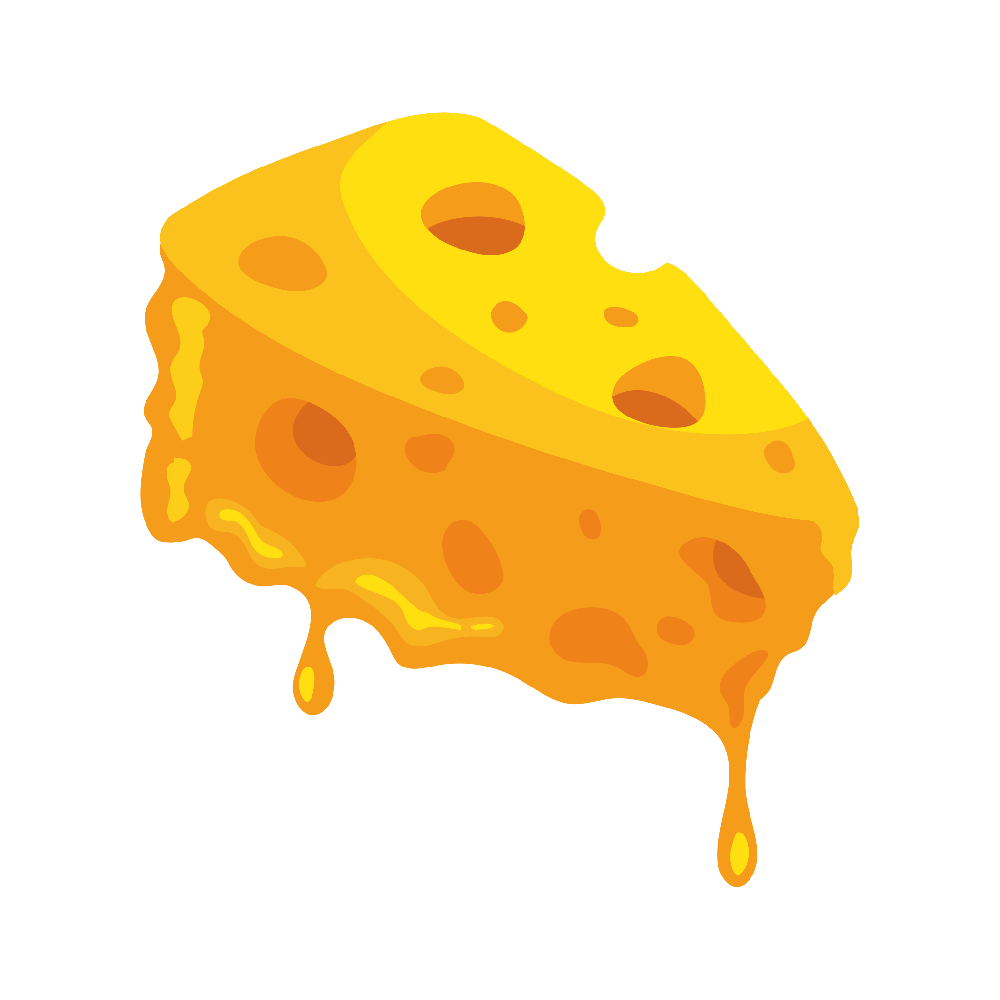

About The CSE Cheese Society
The CSE Cheese Society was founded in 2024, when a seminar ended early and a cheese plate did not. What began as an argument over the last piece of Comté became a weekly meeting, a shared spreadsheet of tasting notes, and eventually a constitution written on a napkin. The napkin has since been laminated.

Our mission is simple: taste widely, take notes, and never let processed cheese food into the building. We host monthly tastings, maintain the Short Guide to Cheese, and elect a Cheese of the Month by ranked-choice ballot. Election disputes are settled by blind tasting.
The Society is open to all students, staff, and the lactose-curious. No experience required. Strong opinions optional but traditional.
Meet the Board
Casey Rennet — Founding Chair
Casey once drove four hours for a cheese that turned out to be sold out, and describes the trip as "still worth it." Responsible for the napkin constitution.
- Favorite family:
- Hard
- Favorite cheese:
- A five-year Gouda "that changed my life."
Bri Larsson — Keeper of the Cave
Bri manages the Society's aging fridge (a mini-fridge, lovingly mislabeled "THE CAVE") and its strict humidity log.
- Favorite family:
- Soft-ripened
- Position on rinds:
- Eat them, always, no exceptions.
Sam Roquefort-Nguyen — Minister of Blue
Sam claims no relation to the village of Roquefort-sur-Soulzon but has never provided documentation either way. Runs the annual "Blue Cheese Amnesty" where skeptics get one supervised second chance.
- Favorite cheese:
- Stilton, at midnight, with port.
Meetings
First Friday of every month
Location: CSE Building, room 1337
Bring nothing but curiosity. The Society provides the cheese; the cheese provides the agenda.